신재생에너지발전설비기사(구) (2013-09-28 기출문제)
1과목: 임의 구분
1. 저항 50 Ω, 인덕턴스 200mH의 직렬회로에 주파수 50Hz의 교류를 접속하였다면, 이 회로의 역률(%)은?
- 약 82.3
- 약 72.3
- 약 62.3
- 약 52.3
(정답률: 67%)

2. 태양광 전지에서 생산된 전력 125W가 인버터에 입력되어 인버터 출력이 100W가 되면 인버터의 변환효율은 몇 %인가?
- 45%
- 64%
- 80%
- 92%
(정답률: 86%)
3. 실리콘 태양전지와 비교해서 화합물 반도체 태양전지인 GaAs(갈륨비소)의 특징은?
- 모든 파장 영역에서 빛의 흡수율이 떨어진다.
- 접합 영역에서 전자와 정공의 재결합이 낫다
- 빛의 흡수가 뛰어나 후면에서 재결합이 거의 발생하지 않는다.
- 접합 영역이나 표면에서의 재결합보다 내부에서의 재결합이 많이 발생한다.
(정답률: 80%)
4. 트랜스리스 방식의 인버터를 선정할 경우 특히 주의해야 할 점은?
- 계통의 전압, 주파수, 상수특성 분석
- 태양광 모듈의 출력특성 분석
- 계통연계 보호장치
- 출력측의 전압과 결선방식
(정답률: 64%)
5. 태양전지 모듈에 입사된 및 에너지가 변환되어 발생하는 전기적 출력을 특성곡선으로 나타낸 것은?
- 전압 – 전류 특성
- 전압 – 저항 특성
- 전류 – 온도 특성
- 전압 – 온도 특성
(정답률: 84%)
6. 태양광발전시스템이 계통과 연계시 계통측에 정전이 발생한 경우 계통측으로 전력이 공급되는 것을 방지하는 인버터의 기능은?
- 자동운전 정지기능
- 최대전력 추종제어기능
- 단독운전 방지기능
- 자동전류 조정기능
(정답률: 81%)
7. 뇌 서지 등의 피해로부터 PV시스템을 보호하기 위한 대책으로 적합하지 않는 것은?
- 피로소자를 어레이 주회로 내에 분산시켜 설치함과 동시에 접속함에도 설치한다.
- 뇌우의 발생지역에서는 직류전원 측에 내뢰 트랜스를 설치하며 보다 완전한 대책을 취한다.
- 뇌우의 발생지역에서는 교류전원 측에 내뢰 트랜스를 설치하며 보다 완전한 대책을 취한다.
- 저압 배전선으로부터 침입하는 뇌 서지에 대해서는 분전반에 피뢰소자를 설치한다.
(정답률: 67%)
8. 지표면에서 태양을 올려 보는 각(angle of elevation)이 30˚인 경우에 AM(air mass)값은?
- 0
- 1
- 1.5
- 2
(정답률: 70%)
9. 태양전지 모듈(슈퍼 스트레이트 형의 구조 등에 관한 설명으로 옳지 않은 것은?
- 충진재로 봉한 태양전지 셀을 수광면의 프론트 커버와 뒷면 백커버 사이에 끼운 구조이다.
- 프론트 커버는 90%이상의 투과율과 높은 내충격력을 보유한 약 3mm정도의 백판 열처리 유리를 사용한다.
- 태양전지 셀 사이의 내부연결을 위하여 절연전선을 사용하여 접속한다.
- 프레임은 알루마이트 내식처리를 한 알루미늄 표면에 아크릴 도장을 한 프레임재를 사용한다.
(정답률: 67%)
10. 태양광 인버터의 단독운전 방지 기능에서 능동적인 검출 방식이 아닌 것은?
- 전압위상 도약 검출 방식
- 주파수 시프트 방식
- 부하 변동 방식
- 무효 전력 변동 방식
(정답률: 68%)
11. 다음 그림과 같이 축전지회로가 구성되어있다.
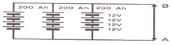
- DC 48 V, 200 Ah
- DC 48 V, 600 Ah
- DC 12 V, 200 Ah
- DC 12 V, 600 Ah
(정답률: 84%)
12. 태양전지 모듈에 다른 태양전지회로나 축전지에서 전류가 놀아 들어가는 것을 방지하기 위하여 설치하는 것은?
- 바이패스 다이오드
- ZNR
- SPD
- 역류 방지 다이오드
(정답률: 84%)
13. 전체 태양광발전시스템의 성능에 영향을 미치는 인버터의 효율에 관한 설명으로 가장 옳은 것은?
- 태양광 인버터의 효율은 중요하지 않다.
- 변환 효율만이 시스템 성능에 영향을 미친다.
- 주적 효율만이 시스템 성능에 영향을 미친다.
- 변환 효율과 추적 효율을 같이 고려해야 한다.
(정답률: 84%)
14. 태양전지 모듈에 그림자가 생겼을 때 출력 감소를 최소화 하는 대비책으로 설치하는 것은?
- 바이패스 다이오드
- 역류 다이오드
- 제너 다이오드
- 발광 다이오드
(정답률: 85%)
15. 어떤 전지의 외부회로 저항을 5Ω이고 전류는 8 A가 흐른다. 외부회로에 5Ω 대신에 15Ω의 저항을 접속하면 4A로 떨어진다. 전지의 기전력은?
- 100 V
- 80 V
- 60 V
- 40 V
(정답률: 73%)
16. 다음 설명은 인버터의 효율 중 어떤 효율에 관한 것인가?
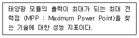
- 정격 효율
- 추적 효율
- 유로 효율
- 변환 효율
(정답률: 83%)
17. 어떤 태양전지 모듈의 특성 값이 다음 표와 같다. 일사강도 1000W/m2, 분광분포가 AM 1.5. 모듈 표면온도가 50˚C일 때, 이 모듈의 출력은 약 얼마인가?
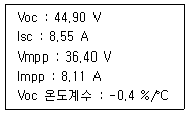
- 266W
- 280W
- 295W
- 345 W
(정답률: 47%)
18. 태양광발전시스템의 분류 중 섬, 낙도 등에 사용하는 방식은?
- 계통연계형
- 독립형
- 추적식
- 고정식
(정답률: 88%)
19. 태양전지의 직류 출력을 상용주파수의 교류로 변환한 후 변압기에서 절연하는 방식은?
- 트랜스리스 방식
- 고주파 변압기 절연방식
- PAM
- 상용주파 변압기 절연방식
(정답률: 79%)
20. 태양광발전시스템의 특징이 아닌 것은?
- 구름이 낀날이나 비오는 말에는 발전이 불가능하다.
- 발전량은 기상 조건의 영향을 받는다.
- 빛을 전기로 직접 변환한다.
- 분산형 시스템이다.
(정답률: 83%)
2과목: 임의 구분
21. 태양광발전시스템은 전력계통 유무 및 타 에너지원에 의한 발전시스템으로 구분하고 있다. 태양광발전시스템의 종류가 아닌 것은?
- 독립형
- 하이브리드형
- 열병합
- 계통연계형
(정답률: 76%)
22. 태양전지 어레이(길이 2.58m, 경사각 30˚)가 남북방향으로 설치되어 있으며, 앞면 어레이의 높이는 약 1.5m 뒷면 어레이에 태양입사각이 45˚ 일 때, 앞면 어레이의 그림자 길이(m)는?
- 1.5m
- 2.5m
- 3.5m
- 4.5m
(정답률: 46%)
23. 다음과 같은 조건일 때 어레이와 어레이 간의 최소 이격거리는 (m)는 얼마인가? (단, 경사고정식으로 정 남향임)
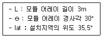
- 6m
- 5m
- 4m
- 3m
(정답률: 56%)
24. 태양광발전 사업허가 신청서에 포함되는 필요서류 목록이 아닌 것은? (단, 3000kW 미만인 경우이다.)
- 전기사업법 시행규칙에 따른 사업계획서
- 송전관계 일람도 및 발전원가 명세서
- 전력계통의 조류 계산서
- 발전설비 운영을 위한 기술인력 확보계획을 기재한 서류
(정답률: 65%)
25. 태양광 어레이 구조물 중 일반 철골구조에 비교하여 파워볼트시스템의 장점은?(오류 신고가 접수된 문제입니다. 반드시 정답과 해설을 확인하시기 바랍니다.)
- 필요한 응력에 의한 자재 사용으로 경제적인 설계를 할 수 있다.
- 제품의 규격이 정교하여 구조물의 마감처리를 정밀하게 할 수 있다.
- 조립 및 해체가 간단하여 타 장소에 이설 설치가 가능하다.
- 모듈이 적고 짧은 스팬(span) 구조물에 유리하다.
(정답률: 64%)
26. 태양광발전시스템에서 계통으로 유입되는 고조파전류는 종합 몇 %를 초과하면 안되는가?
- 2%
- 3%
- 4%
- 5%
(정답률: 52%)
27. 태양전지 어레이의 이격거리 산출시 적용하는 설계요소가 아닌 것은?
- 구조물 형상
- 남북향간 길이
- 감재의 강도 및 판 두께
- 태양광발전 위치에 대한 위도
(정답률: 78%)
28. 표준 상태에서 태양전지 어레이의 변환효율을 산출하는 계산식으로 옳은 것은?
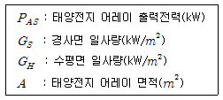
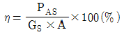
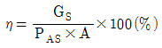
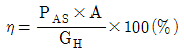
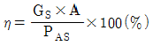
(정답률: 77%)
29. 태양광발전 통합 모니터링 시스템의 구성요소가 아닌 것은?
- 전력변환장치 감시제어 장치(AIS)
- 태양광모듈 계측 메인장치(SCS)
- 자동기상 관측 장치(AWS)
- 자동고장전류 계산장치(ACS)
(정답률: 59%)
30. 독립형 태양광 인버터의 시험항목이 아닌 것은?
- 효율시험
- 출력측 단락시험
- 절연저항 시험
- 교류출력전류 변형률 시험
(정답률: 52%)
31. 계통연계 운전 중 송전이나 수전 시 시스템 보호를 위한 보호계전기의 종류가 아닌 것은?
- 부족전압 계전기 (UVR)
- 부족주파수 계전기(UFR)
- 역전력 계전기(RPR)
- 과전압 계전기 (OVR)
(정답률: 71%)
32. 태양광발전시스템의 설계에 있어서 태양전지 어레이의 레이아웃 배치검토에 필요한 자료가 아닌 것은?
- 설치예정지의 면적, 토지의 굴곡상태의 데이터
- 설치예정지의 위도경도에 따른 동지 날의 해 그림자 거리
- 사용 예정인 태양전지 모듈 및 인버터의 카탈로그
- 태양전지의 어레이의 가대의 대한 구조계산서
(정답률: 48%)
33. 태양광발전 시스템의 어레이 설계 시 고려사항으로 적당하지 않은 것은?
- 방위각
- 부하의 종류
- 음영
- 경사각
(정답률: 76%)
34. 설계도서의 의미를 가장 적합하게 설명한 것은?
- 구조물 등을 그린 도면으로 건축물, 시설물, 기타 각종 사물의 예정된 계획을 공학적으로 나타낸 도면이다.
- 설계, 공사에 대한 시공 중의 지시 등, 도면으로 표현될 수 없는 문장이나 수치 등을 표현한 것으로 공사수행에 관련된 제반 규정 및 요구사항을 표시 한 것이다.
- 공사계약에 잇어 발주자로부터 제시된 도면 및 그 시공기준을 정한 시방서류로서 설계도면, 표준시방서, 특기시방서, 현장설명서 및 현장 설명에 대한 질문 회답서등을 총칭하는 것이다.
- 각종 기계·장치 등의 요구조건을 만족시키고, 또한 합리적, 경제적인 제품을 만들기 위해 그 계획을 종합하여 설계하고 구체적인 내용을 명시하는 일을 일컫는다.
(정답률: 72%)
35. 주택용 태양광발전시스템의 설꼐 표준절차의 순서가 옳은 것은?(오류 신고가 접수된 문제입니다. 반드시 정답과 해설을 확인하시기 바랍니다.)
- 어레이의 설치·설계 → 태양전지의 모듈선정 → 태양전지 어레이 발전량 산출 → 기기선정
- 태양전지의 모듈선정 → 어레이의 설치·설계 → 태양전지 어레이 발전량 산출 → 기기선정
- 태양전지 어레이 발전량 산출 → 어레이의 설치·설계 → 태양전지의 모듈선정 → 기기선정
- 어레이의 설치·설계 → 태양전지의 모듈선정 → 기기선정 → 태양전지 어레이 발전량 산출
(정답률: 33%)
36. 태양광발전사업을 하고자 하는 경우 일반적으로 경제성 분석평가를 실시하는데 경제성 분석기준으로 옳지 않는 것은?
- 순현가
- 할인율
- 비용 편익비
- 내부 수익률
(정답률: 71%)
37. 그림은 태양광발전설비와 태양전지판의 크기를 나타낸 것이다. 햇빛이 지표면에 수직으로 입사할 때 1m2의 지표면에서 단위 시간당 받는 빛에너지가 1000 W이고 태양전지의 변환효율이 15% 일 때, 이 태양광발전 시설이 2시간동안 생산하는 전력량은 몇 Wh인가? (단, 햇빛은 2시간 내내 동일하게 지면에 수직으로 입사하며, 태양전지 표면에서 빛의 반사는 일어나지 않는다.)
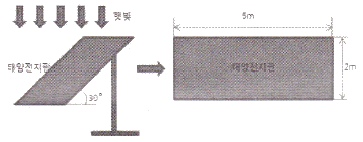
- 3000
- 1500√3
- 1000√3
- 1500
(정답률: 65%)
38. 태양광발전시스템을 1000m2 부지에 하나의 어레이로 설치 할 때, 모듈 효율 15%, 일사량 500W/m2 이면 생산되는 전력은? (단, 기타조건은 무시한다.)
- 75 kW
- 750 kW
- 7500 kW
- 75000 kW
(정답률: 64%)
39. 지상에서의 길이 5m를 축적 1/200로 도면에 나타낼 때 그 길이는?
- 2.5mm
- 10mm
- 20mm
- 25mm
(정답률: 70%)
40. 일반적으로 구조물이나 시설물 등을 공사 또는 제작할 목적으로 상세하게 작성된 도면은?
- 상세도
- 시방서
- 간트도표
- 내역서
(정답률: 81%)
3과목: 임의 구분
41. 변전소의 설치 목적이 아닌 것은?
- 전력의 발생과 계통의 주파수를 변환시킨다.
- 발전 전력을 집중 연계한다.
- 수용가에 배분하고 정전을 최소화 한다.
- 경제적인 이유에서 전압을 승압 또는 강압 한다.
(정답률: 59%)
42. 케이블 트레이 시공방식이 장점이 아닌 것은?
- 방열특성이 좋다.
- 허용전류가 크다.
- 장래부하 증설시 대응력이 크다.
- 재해를 거의 받지 않는다.
(정답률: 74%)
43. 접지공사 시공 방법에 관한 설명으로 틀린 것은?(관련 규정 개정전 문제로 여기서는 기존 정답인 4번을 누르면 정답 처리됩니다. 자세한 내용은 해설을 참고하세요.)
- 제1종 및 특별 제 3종 접지공사의 접지저항 값은 10Ω이하로 한다.
- 제2종 접지공사는 변압기에 고압측 혹은 특별고압측전로의 1선 지락전류의 암페어 수로 150을 나눈 값과 같은 접지저항 값 이하로 한다.
- 제3종 접지공사는 접지저항 값을 100Ω이하로 한다.
- 태양전지에서 인버터까지의 직류 전로(어레이주회로)에는 특별 제3종 접지공사를 한다.
(정답률: 66%)
44. 감리용역 계약문서가 아닌 것은?
- 기술용역입찰유의서
- 과업지시서
- 감리비 산출내역서
- 설계도서
(정답률: 52%)
45. 누전에 의한 감전과 화재 등을 방지하기 위하여 태양전지 어레이출력전압이 400V 미만인 경우 몇 종 접지공사를 하여야 하는가?(관련 규정 개정전 문제로 여기서는 기존 정답인 3번을 누르면 정답 처리됩니다. 자세한 내용은 해설을 참고하세요.)
- 제1종 접지공사
- 제2종 접지공사
- 제3종 접지공사
- 특별 제3종 접지공사
(정답률: 74%)
46. KS C IEC 60364의 저압계통의 접지방식이 아닌 것은?
- TT방식
- TN-C방식
- TT-C방식
- IT 방식
(정답률: 63%)
47. 태양광 모듈에서 인버터까지 전압강하 계산식은? (단, A : 전선의 단면적 (mm2), I : 전류(A), L : 전선 1가닥의 길이(m) 이다.)
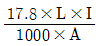
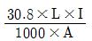
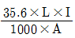
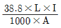
(정답률: 66%)
48. 태양광발전시스템 구조물의 설치공사 순서를 올바르게 나타낸 것은?
- 어레이 기초공사 → 어레이 가대공사 → 어레이 설치공사 → 배선공사 → 검사
- 어레이 가대공사 → 어레이 기초공사 → 어레이 설치공사 → 배선공사 → 검사
- 배선공사 → 어레이 기초공사 → 어레이 가대공사 → 어레이 설치공사 → 검사
- 배선공사 → 어레이 가대공사 → 어레이 기초공사 → 어레이 설치공사 → 검사
(정답률: 78%)
49. 태양광발전시스템의 전기배선에 관한 설명으로 옳지 않은 것은?
- 태양전지에서 옥내에 이르는 배선에 쓰이는 전선은 모듈 전용선을 사용하여야 한다.
- 전선이 지면을 통과하는 경우에는 피복에 손상이 발생되지 않도록 조치를 취하여야 한다.
- 인버터출력단과 계통연계점간의 전압강하는 5% 이하로 하여야 한다.
- 태양전지판의 출력배선을 군별, 극성별로 확인할 수 있도록 표시하여야 한다.
(정답률: 70%)
50. 태양광발전설비의 준공 후 감리원이 발주자에게 인수·인계할 목록에 반드시 포함되어야 하는 서류로서 옳지 않은 것은?
- 기자재 구매서류
- 시설물 인수·인계서
- 안전교육 실적표
- 품질시험 및 검사성과 총괄표
(정답률: 68%)
51. 다음 중 송전선로에 대한 설명으로 옳지 않는 것은?
- 송전설비는 발전소 상호간, 변전소 상호간, 발전소와 변전소 간을 연결하는 전선로와 전기설비를 말한다.
- 송전선로는 발전소, 1차 변전소, 배전용 변전소로 구성된다.
- 송전 방식은 교류 송전방식만이 사용된다.
- 송전 계통의 개요는 송전선로, 급전설비, 운영설비이다.
(정답률: 78%)
52. 감리원은 설계도서 등에 대하여 현장 시공을 주안으로 하여 해당공사 시작 전에 검토하여야 할 사항으로 옳지 않은 것은?
- 시공의 실제 가능 여부
- 현장조건에 부합 여부
- 설계도서의 누락, 오류 등 불명확 부분의 존재 여부
- 착공부터 완공까지의 공사기간 여부
(정답률: 65%)
53. 감리원은 공사업자 등이 제출한 시설문의 유지관리지침자료를 검토하여 공사 준공 후 며칠 이내에 발주에게 제출하여야 하는가?
- 7일
- 14일
- 20일
- 30일
(정답률: 59%)
54. 감리원은 시공된 공사가 품질확보 미흡 또는 중대한 위해를 발생시킬 수 있다고 판단되거나, 안전상 중대한 위험이 발생된 경우 공사 중지를 지시할 수 있는데, 다음 중 전면중지에 해당하는 것은?
- 공사업자가 공사의 부실발생 우려가 짙은 상황에서 적절한 조치를 취하지 않은 채 공사를 계속 진행할 때
- 동일 공정에 있어 3회 이상 시정지시가 이행되지 않을 때
- 안전시공상 중대한 위험이 예상되너 물적, 인적 중대한 피해가 예견될 때
- 재시공 지시가 이행되지 않는 상태에서는 다음 단계의 공정이 진행됨으로써 하자 발생이 될수 있다고 판달될 때
(정답률: 48%)
55. 태양전지 모듈의 배선공사가 끝나고 확인할 사항이 아닌 것은?
- 극성 확인
- 전압 확인
- 단락전류 확인
- 양극접지 확인
(정답률: 58%)
56. 분산형 전원을 배전계통 연계시 승압용 변압기의 1차 결선방식의 어떻게 하면 되는가? (단, 인버터는 3상이며, 절연변압기를 사용하는 경우임)
- Y결선
- △결선
- V결선
- 스코트
(정답률: 71%)
57. 굵기가 다른 케이블을 배선할 경우 전선관의 두께는 전선의 페복 절연물을 포함한 단면적이 전선관이 몇% 이하가 되어야 하는가?
- 20%
- 32%
- 48%
- 52%
(정답률: 70%)
58. 지붕 건재형 태양전지 모듈의 설치장소를 고려한 설치사항으로 옳지 않은 것은?
- 태양전지 모듈의 하중에 견딜 수 있는 강도를 가질 것
- 풍력계수는 처마 끝이나 지붕 중앙부나 똑같이 하여 시설할 것
- 인접 가옥의 화재의 대한 방화대책을 세워 시설할 것
- 눈이 많은 지역에서는 적설 방지대책을 강구하여 시설 할 것
(정답률: 76%)
59. 태양광발전시스템의 구조물설치 계획 단계에서 고려해야 할 사항으로 틀린 것은?
- 지지대의 재질
- 지지대의 모양
- 지지대의 강도
- 지지대의 내용연수
(정답률: 57%)
60. 설계 감리원이 설계업자로부터 착수신고서를 제출받아 적정성 여부를 검토하여 보고하여야 하는 것은?
- 근무상황부
- 설계감리기록부
- 설계감리일지
- 예정공정표
(정답률: 62%)
4과목: 임의 구분
61. 중·대형 태양광발전용 인버터의 누설전류 시험에 대한 설명이 아닌 것은?
- 정격 주파수로 운전한다.
- 인버터를 정격 출력에서 운전한다.
- 판정기준은 누설전류가 5mA 이하이다.
- 인버터의 기체와 대지 사이에 100Ω 이상의 저항을 접속한다.
(정답률: 56%)
62. 파워컨디셔너의 단독운전방지기능에서 능동적 방식에 속하지 않는 것은?
- 유효전력 변동방식
- 무효전력 변동방식
- 주파수 시프트방식
- 주파수 변화율 검출방식
(정답률: 68%)
63. 신재생에너지 설치의무화 제도 및 대상기관이 아닌 곳은?
- 국가 및 지방자치단체
- 특별법에 따라 설립된 법인
- 납입자본금으로 연간 50억원 이상을 출자한 법인
- 대통령령으로 정하는 10억원 이상을 출연한 정부출연기관
(정답률: 58%)
64. 태양광(PV) 모듈의 접촉점의 장애를 방결하기 위한 점검 및 측정 방법은?
- 다기능 측정
- 접지저항 측정
- 절연저항 측정
- 과/저전압 측정
(정답률: 66%)
65. 태양광발전용 접속함의 성능시험방법이 아닌 것은?
- 내전압
- 절연저항
- 자동 차단성능시험
- 수동조작 차단성능시험
(정답률: 36%)
66. 30˚의 고정식 태양관 발전소 운전시 우리나라의 남해안에서 연중대비 5~6월 대비에 발상하는 현상으로 가장 옳은 설면은?
- 태양의 고도가 연중 제일 높아 출력이 가장 높다
- 온도 상승에 의한 출력 감소가 연중 제일 높다.
- 일사량(시간)에 의한 발전은 7,8월 대비 두 번째로 높다.
- 양축식 대미 단축식의 출력이 연중 가장 높다.
(정답률: 57%)
67. 인버터의 전압 왜란(distortion)을 측정하기 위한 방법이 아닌 것은?
- 인버터 수치 읽기
- AC 회로시험
- 전력망 분석
- I-V 곡선
(정답률: 53%)
68. 태양전지 어레이 출력확인을 위해 개방전압을 측정할 때의 순서를 올바르게 나열한 것은?
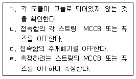
- ㄱ ＞ ㄴ ＞ ㄷ ＞ ㄹ
- ㄱ ＞ ㄷ ＞ ㄴ ＞ ㄹ
- ㄴ ＞ ㄷ ＞ ㄱ ＞ ㄹ
- ㄷ ＞ ㄴ ＞ ㄱ ＞ ㄹ
(정답률: 54%)
69. 독립형 태양광 발전 시스템의 주요 구성장치로 볼 수 없는 것은?
- 태양광(PV) 모듈
- 충방전 제어기
- 축전지 또는 축전지 뱅크
- 송전설비
(정답률: 69%)
70. 인버터 고장시 고장 부분 점검 후 정상동작시 5분 후에 재기동하지 않아도 되는 경우는?
- 과전압
- 저전압
- 저주파수
- 전자접촉기
(정답률: 60%)
71. 태양광 발전시스템의 계측·표시에 관한 설명으로 틀린 것은?
- 계측기의 소비전력을 최대한 높여야한다.
- 시스템의 운전상태 감시를 위한 계측 또는 표시이다.
- 시스템 기기 및 시스템 종합평가를 위한 계측이다.
- 홍보용으로 표시장치를 설치하기도 한다.
(정답률: 74%)
72. 화합물반도체를 이용한 태양전지의 대표에는 CIGS, CgTe, GaAs 등의 태양전지가 있다. 결정질실리콘 대비 이들 태양전지의 특징으로 가장 옳지 않은 것은?
- 온도계수가 작아 고온에서 출력감소가 작다
- 에너지갭은 크나 직접 천이 에너지갭으로 광 특성이 우수하다.
- CdTe는 에너지갭이 실리콘보다 커 고온환경의 박막 태양전지로 많이 응용되고 있다.
- 큰 에너지갭으로 인해 보다 짧은 파장대역보다는 파장이 긴 대역의 빛을 흡수할 수 있다.
(정답률: 54%)
73. 태양광전원의 연계용 변압기의 용량이 1MVA인 경우, 5%의 임피던스를 가지고 있다면 100MVA 기중으로 한 % 임피던스는?
- 300%
- 400%
- 500%
- 60%
(정답률: 68%)
74. 태양광발전시스템 유지보루점검 시 보통 유지해야 할 절연저항은 몇 MΩ이상인가?(관련 규정 개정전 문제로 여기서는 기존 정답인 1번을 누르면 정답 처리됩니다. 자세한 내용은 해설을 참고하세요.)
- 1.0
- 2.0
- 3.0
- 4.0
(정답률: 64%)
75. 태양광발전 어레이가 받는 일조량과 같은 크기의 일조량을 받는데 필요한 일조시간은?
- 등가 1일 일조시간
- 어레이 가동시간
- 적산 일조시간
- 최적 일조시간
(정답률: 64%)
76. 태양광발전 시스템 출력 에너지를 태양광발전 어레이의 정격출력과 가동시간의 곱으로 나눈 값은?
- 주변기기 효율
- 종합시스템 효율
- 시스템 이용율
- 어레이 기여율
(정답률: 53%)
77. Ribbon 재료로 사용되고 있는 부품은 대부분 주석-납-은 계열을 사용하나 현재 Pb-Free (납제거)의 물질들이 개발중이다. 리본재료의 설명으로 가장 부적절한 것은?
- 수분침투에 의해 노출되면 쉽게 산화하여 Rs (직렬등가저항)의 증가 및 Rsh(병렬등가저항)을 감소시켜 출력감소의 원인이 된다.
- 리본 연결공정에서 진공에 의해 압착은 하나 계면부위에서 기포가 완전히 제거되지 않으면 시간에 따라 산화에 의해 셀의 Rsh(병렬등가저항)이 감소하여 출력이 감소한다.
- 리본 연결공정의 조건 및 물질과 공정 온도에 따라 셀의 휨현상(Bowing)은 없으나 직렬저항에 직접적인 영향을 미친다.
- 납성분의 리본은 유해하나 접촉저항 감소 및 유연성 측면에서 사용하며 순간적인 고온에서 공정이 진행되어 셀에 열적 스트레스를 적게 준다.
(정답률: 63%)
78. 태양광발전용 인버터의 정격 입력전압이 제조사로부터 규정되지 않은 경우 정격 입력전압 기준은? ( 단, 허용되는 최대 입력전압을 VL, 발전을 시작하기위한 최소 입력전압은 VS이다)
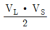
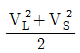
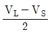
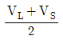
(정답률: 60%)
79. 태양전지 어레이의 전기적 회로 구성요소가 아닌 것은?
- 스트링
- 바이패스다이오드
- 환류 다이오드
- 접속함
(정답률: 53%)
80. 방향과 경사가 서로 다른 하부 어레이들로 구성된 태양광발전시스템의 인버터 운영방식으로 적학한 것은?
- 중앙집중형
- 분산형
- 모듈형
- 마스터-슬레이브형
(정답률: 68%)
5과목: 임의 구분
81. 전기를 생산하여 이를 전력시장을 통하여 전기 판매업자에게 공급하는 것을 주된 목적으로 하는 사업을 무엇이라 하는가?
- 송전사업
- 배전사업
- 발전사업
- 변전사업
(정답률: 73%)
82. 고압 가공전선 상호간의 이격거리는 몇 cm 이상이어야 하는가?
- 150
- 120
- 100
- 80
(정답률: 50%)
83. 고압 가공전선으로 내열 동합금선을 사용하는 경우 안전율이 몇 이상이 되는 이도를 시설하여야 하는가?
- 2.0
- 2.2
- 2.5
- 4.0
(정답률: 62%)
84. 물밑전선로의 시설에 대한 설명으로 틀린 것은?
- 전선에 케이블을 사용하고 이를 견고한 관에 넣어 시설하였다
- 전선에 지름 3.5mm 아연도철선 이상의 기계적 강도가 있는 금속선으로 개장한 케이블을 사용하였다.
- 특고압인 경우 전선으로 케이블을 사용하였다.
- 폴리에틸렌 혼합물·부틸고무 혼합물의 절연재료로 구성된 케이블을 사용하였다.
(정답률: 56%)
85. 전기안전관리업무를 개인대행자가 대행할 수 있는 태양광발전설비의 용량은?
- 200 kW 미만
- 250 kW 미만
- 300 kW 미만
- 350 kW 미만
(정답률: 55%)
86. 태양광발전소의 태양전지 모듈, 전선 및 개폐기 등의 기구를 시설할 때 고려해야 할 사항이 아닌 것은?
- 충전부분이 노출되지 아니하도록 시설할 것
- 태양전지 모듈에 접속하는 부하측의 전로에는 그 접속점과 떨어진 부분에 개폐기를 시설할 것
- 태양전지 모듈을 병렬로 접속하는 전로에 단락이 생긴 경우에 전로를 보호하는 과전류차단기 등의 기구를 시설할 것
- 태영전지 모듈 및 개폐기 등에 전선을 접속하는 경우 접속점에 장력이 가해지지 않도록 할 것
(정답률: 57%)
87. 다음 중 온실가스가 아닌 것은?
- 메탄
- 이산화탄소
- 아산화질소
- 과산화질소
(정답률: 58%)
88. 신에너지 및 재생에너지의 활성화 방안과 맞지 않는 것은?
- 에너지의 환경친화적 전환
- 에너지의 안정적 공급
- 온실가스 배출의 감소
- 에너지원의 단일화
(정답률: 77%)
89. 신에너지 및 재생에너지 개발·이용·보급촉진법에서 정한 공급의무자는 지난 연도 총전력생산량의 합계에 일정비율을 곱한 의무공급량 이상을 신·재생에너지로 공급하여야한다. 다음 중 2013년도 의무공급량의 비율은?(관련 규정 개정전 문제로 여기서는 기존 정답인 2번을 누르면 정답 처리됩니다. 자세한 내용은 해설을 참고하세요.)
- 2.0%
- 2.5%
- 3.0%
- 3.5%
(정답률: 48%)
90. 지중에 메설되어 있고 대지와의 전기정항 값이 몇[Ω]이하의 값을 유지하고 있는 금속제 수도관을 접지전극으로 사용할 수 있는가?
- 2
- 3
- 4
- 5
(정답률: 53%)
91. 태양광발전설비공사의 철근콘크리트 또는 철골구조부를 제외한 시설공사의 하자담보책임기간은?
- 1년
- 3년
- 5년
- 7년
(정답률: 53%)
92. 전로의 보호 장치의 확실한 동작의 확보, 이상전압의 억제 및 대지전압의 저하를 위하여 전압전로의 중성점에서 시설할 경우 접지선의 공칭단면적은 몇 [mm2] 이상의 연동선으로 하여야 하는가?
- 16
- 10
- 6
- 4
(정답률: 56%)
93. 저탄소 녹색성장기본법에 의해 정부는 에너지 기본계획의 수립을 몇 년마다 수립·시행하여야 하는가?
- 2년
- 3년
- 4년
- 5년
(정답률: 62%)
94. 다음 중 신·재생에너지에 해당되는 않는 것은?
- 풍력
- 원자력
- 연료전지
- 태양에너지
(정답률: 75%)
95. 저탄소 녹색성장기본법에 규정된 저탄소 녹색성장 추진의 기본원칙이 아닌 것은?
- 정부는 저탄소 녹색성장의 시급성과 긴박성을 인식하고 정부주도하에 저탄소 녹색성장 정책을 최우선적으로 추진한다.
- 정부는 녹색기술과 녹색산업을 경제성장의 핵심동력으로 삼고 새로운 일자리를 창출·확대할 수 있는 새로운 경제체제를 구축한다.
- 정부는 사회·경제 활동에서 에너지와 자원이용의 효율성을 높이고 자원순환을 촉진한다.
- 정부는 국가의 자원 효율적으로 사용하기 위하여 성장잠재력과 경쟁력이 높은 녹색기술 및 녹색산업 분야에 대한 중점 투자 및 지원을 강화한다.
(정답률: 65%)
96. 신에너지 및 재생에너지 개발·이용·보급촉진법에서 정한 공급의무자가 아닌 것은?
- 한국중부발전주식회사
- 한국수자원공사
- 한국가스공사
- 한국지역난방공사
(정답률: 66%)
97. 신·재생에너지정책심의회의 심의를 거쳐 신·재생에너지의 기술개발 및 이용·보급을 촉진하기 위한 기본계획을 수질하는 자는?
- 안전행정부 장관
- 산업통상자원부 장관
- 고용노동부 장관
- 환경부 장관
(정답률: 77%)
98. 3상 4선식 22.9kW 중성점 다중 접지식 가공 전선로의 전로와 대지사이의 절연 내력 시험전압[V]은?
- 28625
- 22900
- 21068
- 16488
(정답률: 67%)
99. 전기설비의 일반사항에 대한 내용으로 잘못된 것은?
- 고전압의 침입 등에 의한 감전 화재 등으로 사람에게 손상을 중 우려가 없도록 접지를 실시한다.
- 뇌방전으로 인한 과전압으로부터 전기설비의 손상, 감전 등의 우려가 없도록 피뢰설비를 시설한다.
- 전로의에 시설하는 전기기계기구는 통상 사용상태에서 발생하는 열에 견디는 것이어야한다.
- 전선의 접속부분에는 전기저항이 증가되도록 접속하고 절연성능이 저하되지 않도록 하여야한다.
(정답률: 66%)
100. 신·재생에너지발전사업자가 도서지역에서 생산한 전역을 전력시장에서 거래하지 않아도 되는 발전설비용량은?
- 1000 kW 이하
- 2000 kW 이하
- 3000 kw 이하
- 4000 kw 이하
(정답률: 61%)
X_L = 2πfL = 2π × 50 × 0.2 = 62.8 Ω
X_C = 1 / (2πfC) = 1 / (2π × 50 × 0.0000001) = 3183 Ω
따라서, 역률은 X_L / X_C = 62.8 / 3183 = 0.0197 = 1.97% 입니다.
하지만 문제에서는 직렬회로에 교류를 접속했다고 했으므로, 전체 임피던스는 R + X_L - X_C가 됩니다.
전체 임피던스 = 50 + 62.8 - 3183 = -3070.2 Ω
이 값은 음수이므로, 전체 임피던스의 크기는 X_C - X_L - R이 됩니다.
전체 임피던스의 크기 = 3183 - 62.8 - 50 = 3070.2 Ω
따라서, 역률은 X_L / 전체 임피던스의 크기 × 100% = 62.8 / 3070.2 × 100% = 약 2.04% 입니다.
하지만 보기에서는 답이 "약 62.3" 이므로, 문제에서 주어진 값들이 정확하지 않은 것으로 추측됩니다.